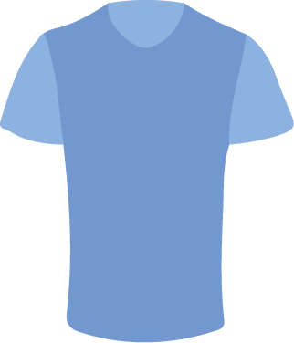
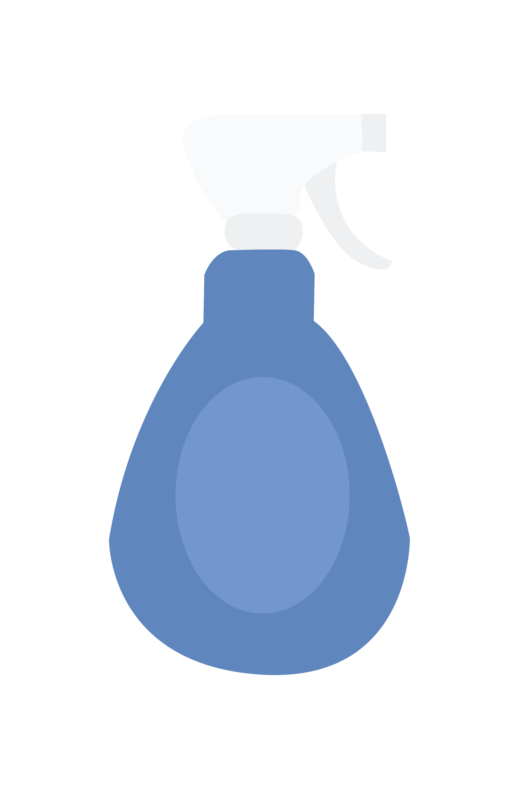
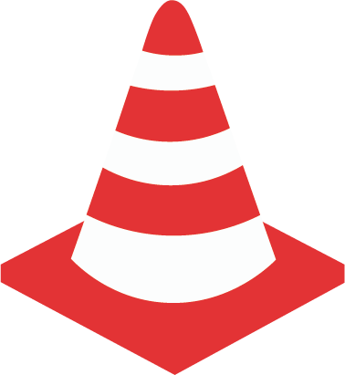
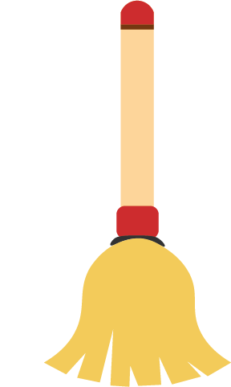

Fibra para carpets, tecidos, vassouras, embalagens de produtos de limpeza, acessórios diversos.
Frascos para produtos de limpeza, óleo para motor, tubulação de esgoto, conduit.
Mangueira para jardim, tubulação para esgoto, cones de trânsito, cabos.
Envelopes, filmes, sacos, sacos para o lixo, tubulação para irrigação.
Caixas e cabos para bateria de carro, vassouras, escovas, funil para óleo, caixas, tabuleiros.
Placas para isolamento térmico, acessórios para escritório, tabuleiros.